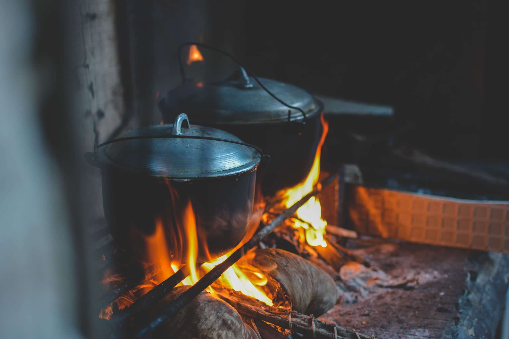
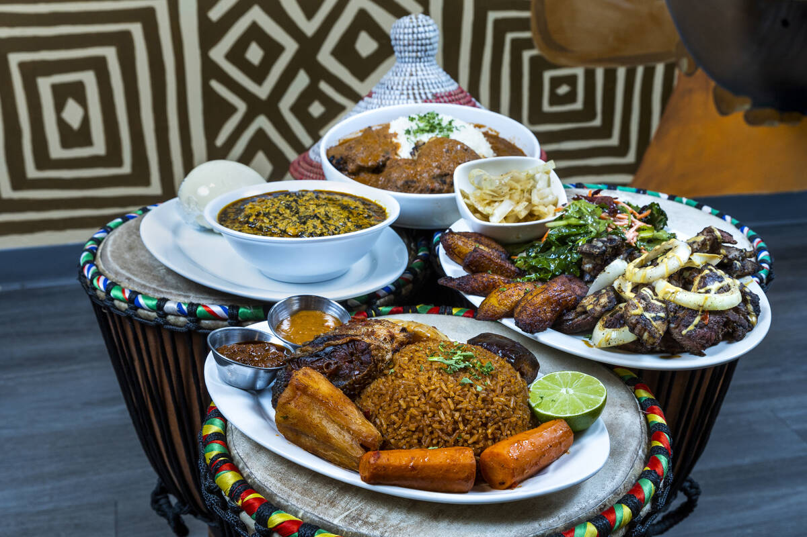

Challenge Name: Fusion Feast
Date: August 1st, 2023
Objective: Create a fusion dish by combining two or more of the following meals: Rice, Chapati, Chicken, Ugali, Omena, and Bananas.
In this cooking challenge, contestants will showcase their creativity and culinary skills by combining two or more of the previously mentioned meals: Rice, Chapati, Chicken, Ugali, Omena, and Bananas. The goal is to create a unique fusion dish that harmoniously blends flavors and textures from different cuisines. Here's an outline of the challenge:
Rules
- Contestants must use at least two of the mentioned meals in their fusion dish.
- Additional ingredients and seasonings can be added to enhance the flavors.
- Contestants are encouraged to experiment with different cooking techniques and presentation styles.
- The fusion dish should be an original creation that showcases a harmonious blend of flavors and textures.
Instructions
- Contestants must select a minimum of two meals from the list to combine in their fusion dish. They can choose more than two meals if desired.
- Contestants should plan their fusion dish, considering how the chosen meals will complement each other.
- Contestants will gather the necessary ingredients and equipment to prepare their fusion dish.
- Cooking time will be provided based on the complexity of the dish, allowing contestants to showcase their cooking techniques and presentation skills.
- During the cooking process, contestants should document their steps and explain their creative choices.
The organizers of the challenge will provide the following cooking equipment to the contestants:

- Gas or electric stoves with multiple burners
- Mixing bowls
- Cutting boards and knives
- Pots and pans of various sizes
- Frying pans
- Rolling pins
- Wooden spoons and spatulas
- Measuring cups and spoons
The fusion dishes will be evaluated based on the following criteria:

- Creativity: How innovative and unique is the combination of the chosen meals?
- Flavor Harmony: How well do the flavors of the combined meals complement each other?
- Presentation: How visually appealing is the fusion dish? Are the plating and garnishing well-executed?
- Technique: How well did the contestants showcase their culinary skills during the cooking process?
- Taste: How delicious is the fusion dish? Does it provide a satisfying eating experience?
Prizes will be awarded based on the judges' evaluation. The specific prizes will depend on the nature of the challenge, budget, and sponsorships.
This cooking challenge will inspire contestants to think outside the box and create fusion dishes that bring together different culinary traditions. It encourages experimentation and innovation in the kitchen, resulting in exciting and unique flavor combinations.